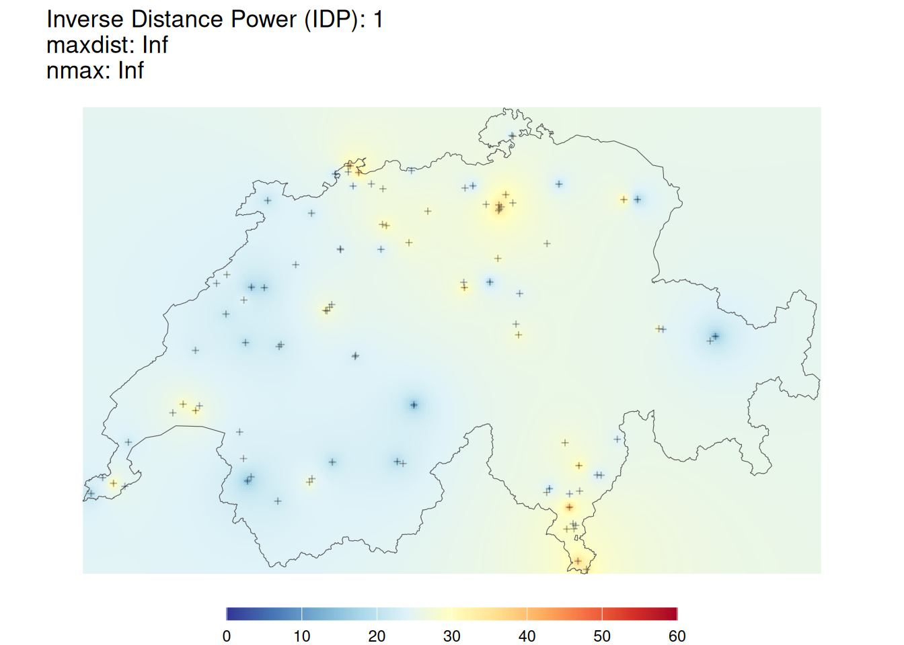
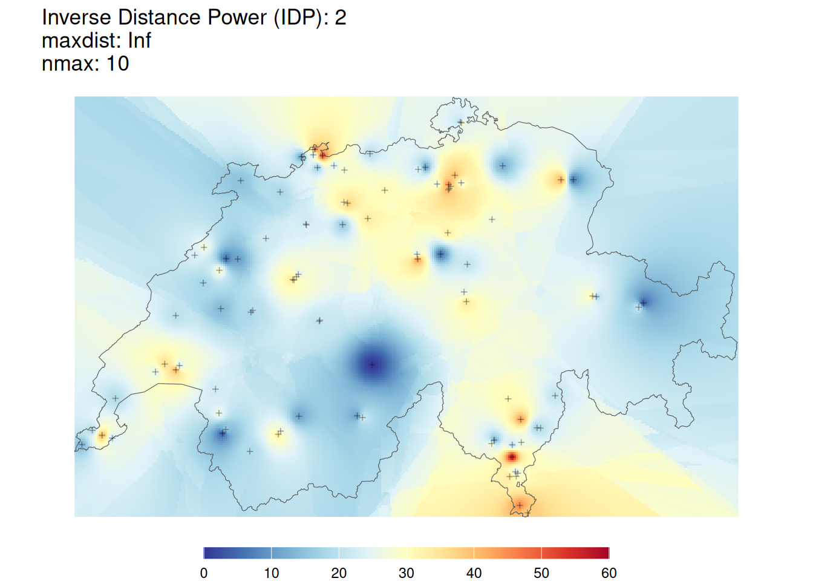
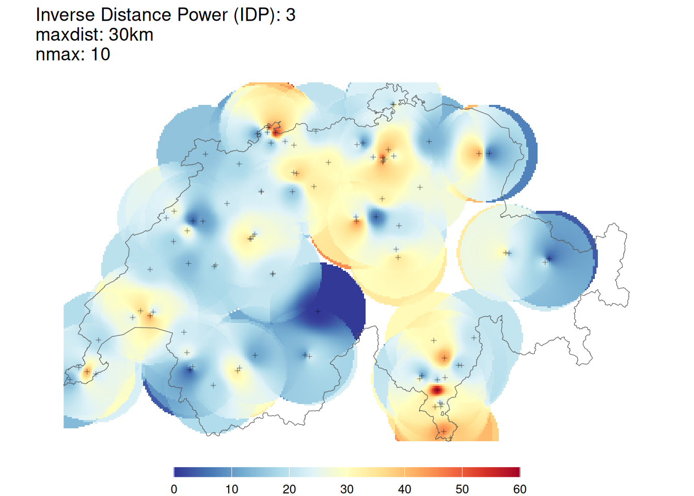

library("sf")
library("dplyr")
library("ggplot2")
library("gstat")Inverse Distance Weighted
Weiter benötigt ihr die nachstehenden Datensätze:
luftqualitaet <- read_sf("data/luftqualitaet/luftqualitaet.gpkg")
schweiz <- read_sf("data/switzerland/schweiz.gpkg")Die Library gstat bietet verschiedene Möglichkeiten, Datenpunkte zu interpolieren, unter anderem auch die inverse distance weighted Methode. Leider ist das Package noch nicht so benutzerfreundlich wie sf: Das Package wird aber aktuell überarbeitet und in mittlerer Zukunft sollte es ebenso einfach zugänglich sein. Damit Ihr Euch nicht mit den Eigenheiten dieser Library herumschlagen müsst, haben wir eine Function vorbereitet, die Euch die Verwendung der IDW-Interpolation erleichtern soll.
Wir nehmen Euch damit etwas Komplexität weg und liefern Euch ein pfannenfertiges Werkzeug. Das hat auch Nachteile und wir ermutigen alle, die dafür Kapazität haben, unsere Function eingehend zu studieren und allenfalls ganz auf die Function zu verzichten und stattdessen direkt gstat zu verwenden. Wenn ihr mit unserer Function arbeiten möchtet, müsst ihr den unten stehenden Code in euer Skript kopieren und ausführen.
my_idw <- function(groundtruth,column,cellsize, nmax = Inf, maxdist = Inf, idp = 2, extent = NULL){
library("gstat")
library("sf")
if(is.null(extent)){
extent <- groundtruth
}
samples <- st_make_grid(extent,cellsize,what = "centers")
my_formula <- formula(paste(column,"~1"))
idw_sf <- gstat::idw(formula = my_formula,groundtruth, newdata = samples, nmin = 1, nmax = nmax, maxdist = maxdist, idp = idp)
idw_matrix <- cbind(as.data.frame(st_coordinates(idw_sf)),pred = st_drop_geometry(idw_sf)[,1])
idw_matrix
}Nun könnt Ihr mit my_idw() den Datensatz luftqualitaet folgendermassen interpolieren.
my_idw(groundtruth = luftqualitaet, column = "value", cellsize = 10000, extent = schweiz)Folgende Parameter stehen Euch zur Verfügung:
- Notwendige Parameter:
groundtruth: Punktdatensatz mit den Messwerten (sf-Objekt)column: Name der Spalte mit den Messwerten (in Anführungs- und Schlusszeichen)cellsize: Zellgrösse des Output-Rasters
- Optionale Parameter
nmax: Maximale Anzahl Punkte, die für die Interpolation berücksichtigt werden sollen. Default:Inf(alle Werte im gegebenen Suchradius)maxdist: Suchradius, welcher für die Interpolation verwendet werden soll. DefaultInf(alle Werte bisnmax)idp: Inverse Distance Power: die Potenz, mit der der Nenner gesteigert werden soll. Default:2. Werte werden im Kehrwert des Quadrates gewichtet: \(\frac{1}{dist^{idp}}\).extent: Gebiet, für welches die Interpolation durchgeführt werden soll. Wenn nichts angegeben wird (DefaultNULL), wird die Ausdehnung vongroundtruthverwendet.
- Ouput
- der Output der Funktion ist eine
data.framemit 3 Spalten:X,YKoordinaten der interpolierten Wertepred: der interpolierte Wert
- der Output der Funktion ist eine
Beim Output handelt sich hier um einen Raster-ähnlichen Datentyp (siehe Vorlesung Spatial DataScience 1). Diesen können wir mit geom_raster mit ggplot visualisieren. Dafür müsst ihr in aes die X und Y Koordinaten angeben und der interpolierte Wert mit fill einfärben.
Aufgabe 1: Raeumliche Interpolation mit IDW
Rechnet so den IDW für die Luftqualitätsmessungen mit verschiedenen Parametern und visualisiert jeweils die Resultate. Experimentiert mit nmax sowie maxdist. Was stellt ihr fest?
Tips:
- Wählt am Anfang eine etwas konvervative (grosse)
cellsizeund verringert diesen nur, wenn euer Rechner damit gut klar kommt - Da der Output aus der Interpolation im gleichen Koordinatenbezugssystem ist wie
schweiz.gpkg, kann man diese beiden Datensätze im gleichenggplotdarstellen. Dafür müsst ihr die aesthetics (aes()) für jeden Layer einzeln setzen und nicht auf der Ebene vonggplot().
idw_1 <- my_idw(groundtruth = luftqualitaet,column = "value",cellsize = 1000, nmax = Inf,maxdist = Inf,idp = 1,extent = schweiz) [inverse distance weighted interpolation]title <- paste(c("Inverse Distance Power (IDP): 1", "maxdist: Inf", "nmax: Inf"), collapse = "\n")
ggplot() +
geom_raster(data = idw_1, aes(X,Y, fill = pred)) +
geom_sf(data = schweiz, fill = NA) +
geom_sf(data = luftqualitaet, size = 1, shape = 3, alpha = 0.3) +
scale_fill_gradientn(colours = rev(RColorBrewer::brewer.pal(11,"RdYlBu")),limits = c(0, 60), na.value = NA) +
labs(fill = "μg/m3", title = title) +
theme_void() +
theme(legend.position = "bottom", legend.title = element_blank(),
legend.key.width = unit(0.10, 'npc'),
legend.key.height = unit(0.02, 'npc'))
idw_2 <- my_idw(groundtruth = luftqualitaet,column = "value",cellsize = 1000, nmax = 10, maxdist = Inf,idp = 2,extent = schweiz) [inverse distance weighted interpolation]title <- paste(c("Inverse Distance Power (IDP): 2", "maxdist: Inf", "nmax: 10"), collapse = "\n")
ggplot() +
geom_raster(data = idw_2, aes(X,Y, fill = pred)) +
geom_sf(data = schweiz, fill = NA) +
geom_sf(data = luftqualitaet, size = 1, shape = 3, alpha = 0.3) +
scale_fill_gradientn(colours = rev(RColorBrewer::brewer.pal(11,"RdYlBu")),limits = c(0, 60), na.value = NA) +
labs(fill = "μg/m3", title = title) +
theme_void() +
theme(legend.position = "bottom", legend.title = element_blank(),
legend.key.width = unit(0.10, 'npc'),
legend.key.height = unit(0.02, 'npc'))
idw_3 <- my_idw(groundtruth = luftqualitaet,column = "value",cellsize = 1000, nmax = 10, maxdist = 30000,idp = 3,extent = schweiz) [inverse distance weighted interpolation]title <- paste(c("Inverse Distance Power (IDP): 3", "maxdist: 30km", "nmax: 10"), collapse = "\n")
ggplot() +
geom_raster(data = idw_3, aes(X,Y, fill = pred)) +
geom_sf(data = schweiz, fill = NA) +
geom_sf(data = luftqualitaet, size = 1, shape = 3, alpha = 0.3) +
scale_fill_gradientn(colours = rev(RColorBrewer::brewer.pal(11,"RdYlBu")),limits = c(0, 60), na.value = NA) +
labs(fill = "μg/m3", title = title) +
theme_void() +
theme(legend.position = "bottom", legend.title = element_blank(),
legend.key.width = unit(0.10, 'npc'),
legend.key.height = unit(0.02, 'npc'))